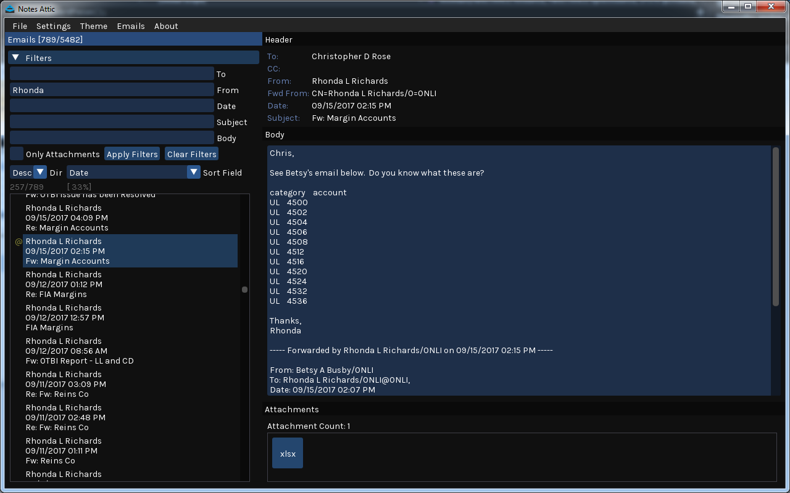
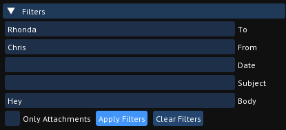
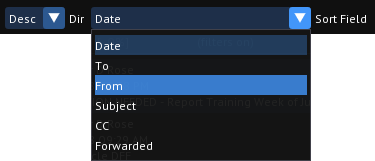
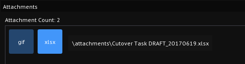
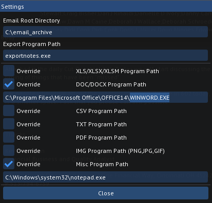
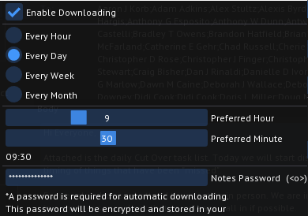
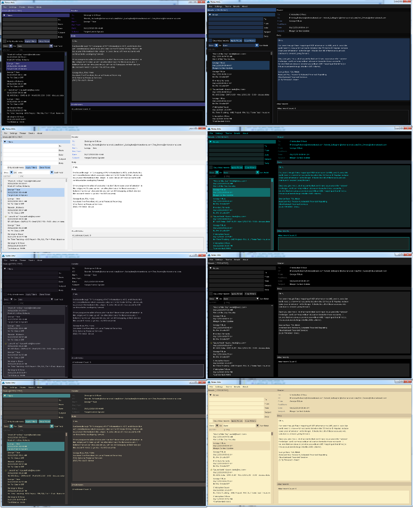

Notes Attic
Limitless Storage for IBM Notes Emails
Notes Attic is a companion application for IBM Notes, built to address the quota limit problem and provide an intuitive interface to download, view, and search your emails.

How to Use
- Download notes_attic.zip by clicking the "Download" button above
- Extract the files to your local harddrive (e.g. C:\attic\)
- Open "notes_attic.exe"
- In Menu, Go to Settings > Edit Settings
- Modify "Email Root Directory" if you want. (This is the location where the emails you download from IBM Notes will get stored)
- In Menu, Go to Emails > Download Emails From IBM Notes...
- Enter your password in the console that pops up, and your emails will start downloading!
- After it finishes downloading your emails, Go to Emails > Refresh Emails
- You can set up automatic downloading to keep your email archive up to date
Features
Basic Filtering with string searching

Sorting by a header field ascending or descending

Open attachments from interface

Override the default program for opening particular attachment types

Automatic downloading of emails

Choose between several pre-built themes and fonts

Requirements
- Windows 64-bit Operating System
- IBM Notes